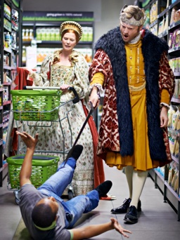

PALOOne multimodal model that reasons about images in 10 languages

QEnglish中文हिन्दीEspañolFrançaisالعربيةবাংলাРусскийاردو日本語
↓ PALO
AEnglish中文हिन्दीEspañolFrançaisالعربيةবাংলাРусскийاردو日本語
Training data
English instructions
→
fine-tuned LLM translates
→
+ 9 languages
semi-automated, minimal manual effort
Speakers per language
English
1.4B
Chinese
1.1B
Hindi
609M
largest gains
Spanish
559M
French
310M
Arabic
274M
largest gains
Bengali
273M
largest gains
Russian
255M
Urdu
232M
largest gains
Japanese
123M
All 10
0
1B
2B
3B
4B
5B
≈5B people · 65% of the world population
10 languages
1.7B · 7B · 13B models